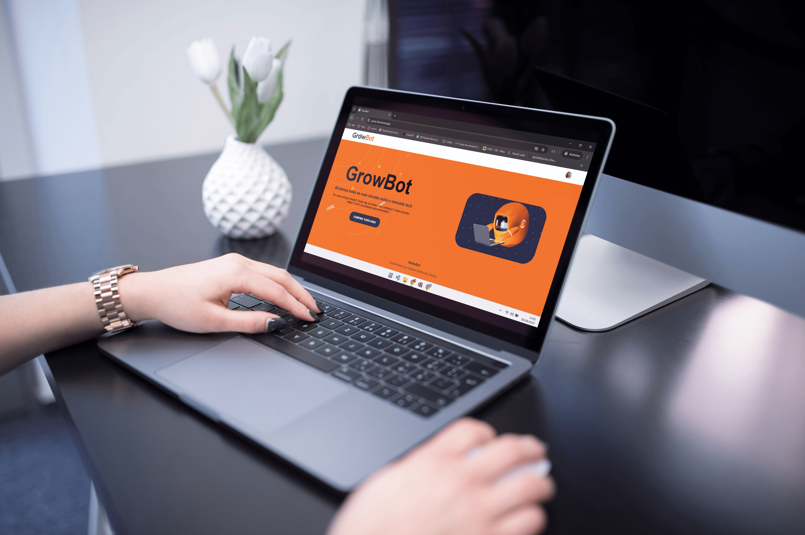
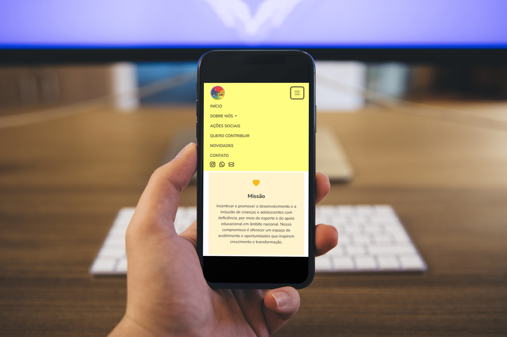
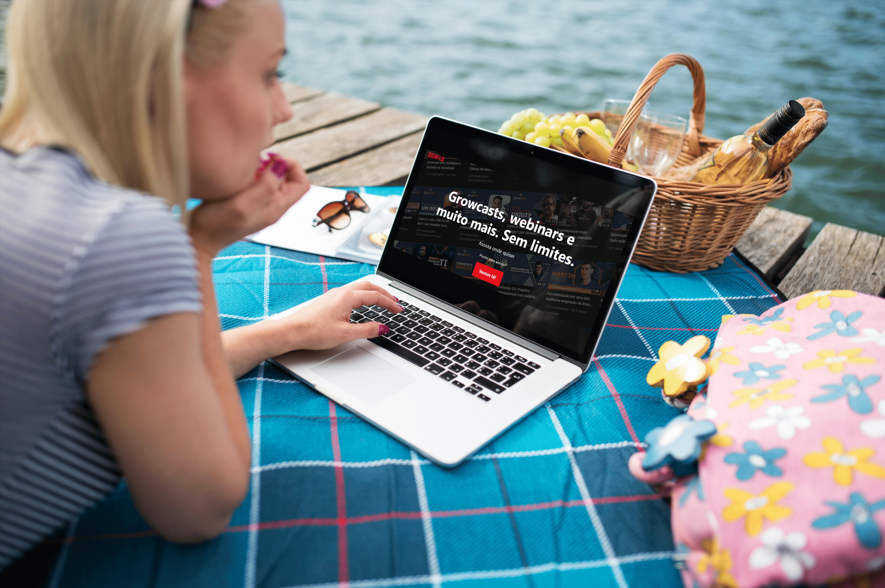
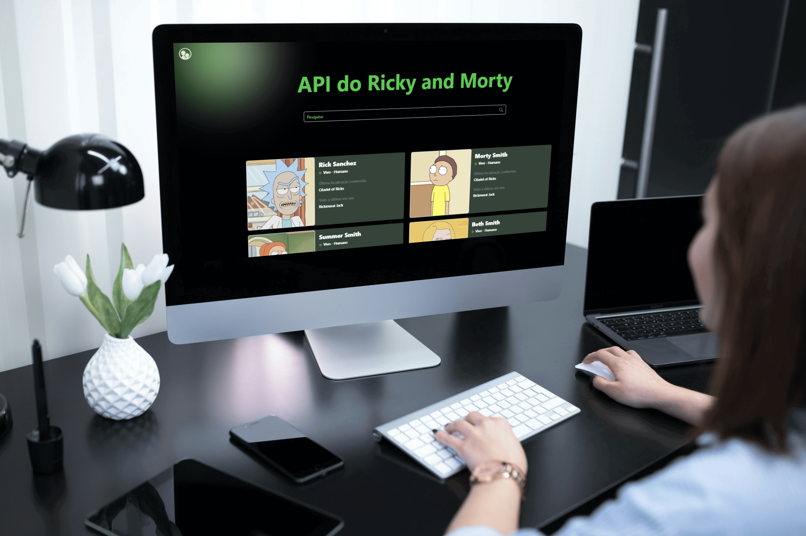

- carregando...

Olá, eu sou a
Carregando...
Transformo ideias em experiências digitais acessíveis!
-
Rede social interativa com gerenciamento de estado: GrowTwitter - FullStack

Projeto FullStack: API RESTful robusta e escalável, desenvolvida com Clean Code e Arquitetura em Camadas (Service Pattern). Com suporte a Feed Global, Trends, Paginação, Sistema de Follow e Validação de Dados rigorosa. Frontend responsivo com experiência completa: temas Dark/Light, animações exclusivas e interação em tempo real, tweet, follow, explorar.
Versão online do projeto (Vercel) Repositório no GitHub Repositório API
Técnologias utilizadas: React, MUI, TypeScript, Redux, Axios, Node.js, Express, PostgreSql, Prisma ORM, Zod, JWT -
Buscar Patas - Sistema de adoção de Pets

Aplicação moderna e responsiva que facilita o cadastro de pets e adotantes e otimiza a conexão entre eles. A aplicação também conta com painel administrativo de gerenciamento e dashboard com contagem de cadastros, pets e adoções.
Versão online do projeto Repositório no GitHub
Técnologias utilizadas: Backend: Node.js, Express.js, Prisma ORM, PostgreSQL, JSON Web Tokens (JWT), Bcrypt.js. Frontend: ReactJS e Bootstrap. -
Assistente virtual GrowBot - React
O GrowBot é um assistente virtual inteligente projetado para guiar pessoas iniciantes e aspirantes na jornada do mercado de tecnologia. Ele utiliza o poder da inteligência artificial para fornecer insights sobre como iniciar uma carreira, quais tecnologias estudar, onde encontrar oportunidades de emprego e muito mais. Este projeto visa simplificar o processo de busca por informações, centralizando o conhecimento em uma interface de chat amigável e acessível.
Versão online do projeto (Vercel) Repositório no GitHub
Técnologias utilizadas: React, TypeScript, Node.js, Express, Google Gemini API, Mongo DB. -
Landing Page ONG A Casa Do Ney
Landing Page desenvolvida como contribuição voluntária através da plataforma FreeHelper. A ONG A Casa do Ney acolhe crianças e adolescentes com deficiência motora e intelectual na Zona Sul de São Paulo, oferecendo apoio, inclusão e esperança. Minha contribuição foi desenvolver uma página institucional, para que a instituição tenha presença digital e possa atrair mais voluntários e apoiadores.
Versão online do projeto Repositório no GitHub
Técnologias utilizadas: HTML, CSS, Bootstrap e JavaScript. -
Catálogo de Produtos - React & TypeScript

Aplicação web para exibir e manipular uma lista de produtos, permitindo filtragem por nome e categoria, visualização detalhada em modal, favoritar produtos com limite por categoria e acompanhar favoritos em tempo real no Header. A aplicação simula requisições assíncronas, trata dados incompletos, oferece paginação, responsividade para diferentes dispositivos e cuidados básicos de acessibilidade, com gerenciamento de estado centralizado via Context API e estilo modularizado seguindo a metodologia BEM.
Versão online do projeto (Vercel) Repositório no GitHub
Técnologias utilizadas: React e TypeScript. -
Growflix - Plataforma de estudos para Devs
Plataforma fictícia inspirada na Netflix, desenvolvida para reunir os conteúdos em vídeo da Growdev em um só lugar.
Versão online do projeto Repositório no GitHub
Técnologias utilizadas: HTML, CSS, Bootstrap e JavaScript. -
Bootcamp Growdev - API Rick and Morty
Projeto desenvolvido durante o Bootcamp da Growdev, com o objetivo de criar três protótipos de layouts que exibem informações sobre personagens da API Rick and Morty. Nesse projeto foi utilizada a integração com a API Rick and Morty para consumo e exibição dinâmica dos dados.
Versão online do projeto (Vercel) Repositório no GitHub
Técnologias utilizadas: HTML, CSS e JavaScript, Bootstrap e integração com a API. -
Repo-Wikis - Buscando repositórios no GitHub - React
Repo-Wikis é uma aplicação desenvolvida com React que permite buscar e listar informações sobre repositórios do GitHub através do consumo da API do GitHub. O objetivo é fornecer uma interface simples e prática para explorar os repositórios de forma interativa.
Versão online do projeto Repositório no GitHub
Técnologias utilizadas: HTML, CSS, JavaScript e React. -
Dio - Landing Page - React JavaScript e React Typescript
A página foi criada para ser uma introdução envolvente aos cursos e conteúdos oferecidos pela Digital Innovation One (DIO), apresentando uma interface simples e funcional com componentes reutilizáveis. Desenvolvida em duas versões: JavaScript com React e TypeScript com React.
Versão online do projeto - React JavaScript Repositório no GitHub - React JavaScript Versão online do projeto - React TypeScript Repositório no GitHub - React TypeScript
Técnologias utilizadas: HTML, CSS e JavaScript, TypeScript e React. -
Nikel - Controle Financeiro
Nikel é uma aplicação web que auxilia os usuários a gerenciarem suas finanças pessoais de maneira eficiente, permitindo o controle de receitas, despesas e investimentos.
Versão online do projeto Repositório no GitHub
Técnologias utilizadas: HTML, CSS e JavaScript. -
Coffee Shop - Landing Page
Landing page responsiva desenvolvida para cafeteria, focada em proporcionar uma experiência visual agradável e intuitiva em diferentes dispositivos. O projeto foi estruturado aplicando princípios de design responsivo, layout flexível e boas práticas modernas de front-end, garantindo acessibilidade e usabilidade.
Versão online do projeto Repositório no GitHub
Técnologias utilizadas: HTML, CSS e Bootstrap, com estilização personalizada para oferecer um design diferenciado e alinhado à identidade da marca. -
GrowTravel - Landing Page
O GrowTravel é uma aplicação web fictícia de uma agência de turismo, criada para aplicar conceitos fundamentais de HTML, CSS e acessibilidade. O projeto foi otimizado para atingir pontuações máximas nas métricas do Lighthouse, garantindo: 100% em Acessibilidade, 100% em Desempenho, 100% em Boas Práticas e 100% em SEO
Versão online do projeto Repositório no GitHub
Tecnologias utilizadas: HTML semântico e CSS responsivo, Lighthouse (Google DevTools), com foco em estilização personalizada para criar um design moderno, acessível e adaptável a diferentes dispositivos.